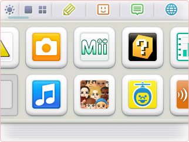

ニンテンドー3DSの画面の明るさを調整したり、バッテリーの消費をおさえる省エネモードに切り替えたりすることができます。
ソフトのアイコンの大きさを変えて、HOMEメニューの1画面に表示できるアイコンの数を増やすことができます。ソフトが増えてもスクロールさせる必要がなくなります。
手書きのメモをとることができます。ゲームの中で覚えておきたい重要なヒントや、マップなどをメモしておけば、ゲーム中に確認できて便利です。
家族や友だちとフレンドコードを交換して登録しておけば、Wi-Fi接続経由で、フレンドがプレイしているゲームやひとことコメントなどを確認できます。ちなみに、フレンドがオンラインになると、3DS本体のおしらせランプがオレンジ色に点滅します。
「いつの間に通信」や「すれちがい通信」などのおしらせを表示します。おしらせがあると、アイコンが変化したり、おしらせランプが点灯したりするので、すぐにわかります。
Wi-Fi接続でインターネット上のホームページを閲覧できます。この機能が利用できるようになるのは、6月7日の3DS本体更新後の予定です。